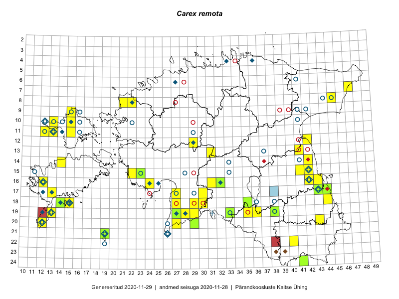

Carex remota
Uuendatud: 2016-12-01
Kaardile koondatud taksonid: Carex remota L.

Kaart põhineb 45 kirjel.
Kuvatud viited 20 esimesele andmebaasikirjele, ülejäänud PlutoFis
- Peedu Saar, Ott Luuk: 2015-06-21: 14-42: ala
- Peedu Saar: 2015-07-04: 18-44: ala
- Toomas Kukk, Eerik Leibak: 2015-08-11: 09-15: ala
- Peedu Saar, Liina Oja: 2015-07-22: 08-45: ala
- Thea Kull, Eerik Leibak: 2015-07-05: 16-42: ala
- Peedu Saar: 2015-08-11: 13-41: ala
- Ott Luuk, Elle Roosaluste, Jaak-Albert Metsoja: 2015-06-16: 18-15: ala
- Ott Luuk, Hannes Pehlak: 2015-06-12: 19-35: ala
- Thea Kull, Eerik Leibak: 2015-07-05: 17-43: ala
- Meeli Mesipuu, Indrek Tammekänd: 2015-07-14: 19-27: ala
- Meeli Mesipuu, Indrek Tammekänd: 2015-07-14: 19-27: GPS punkt
- Indrek Tammekänd: 2015-04-06: 15-23: ala
- Indrek Tammekänd, Kadri Runnel, Leho Tedersoo, Urmas Kõljalg: 2015-08-20: 15-22: GPS punkt
- Maria Abakumova: 2015-07-07: 16-32: ala
- Maret Gerz, Leena Gerz: 2015-08-15: 15-23: ala
- Eeva-Maria Jeletsky, Tarmo Niitla: 2015-08-05: 22-40: ala
- Mari Reitalu: 2015-06-16: 16-12: ala
- Mari Reitalu, Oliver Parrest: 2015-08-12: 17-13: ala
- Thea Kull: 2014-08-28: 19-27: ala
- Mari Reitalu, Triin Reitalu: 2014-07-17: 18-14: ala